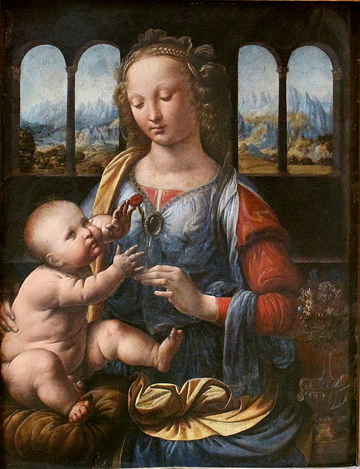

<head>
<meta charset="UTF-8" />
<meta name="keywords" content="drawing, painting" />
<meta name="description" content="drawings by Sunjy" />
<title>Sunjy</title>
<link rel="shortcut icon" type="image/x-icon" href="../../mImages/mCommon/favicon.ico" media="screen" />
<link rel="stylesheet" type="text/css" href="../../mCsses/mCommon/mCssA.css" />
<link rel="stylesheet" type="text/css" href="../../mCsses/mCommon/mCssB.css" />
<link rel="stylesheet" type="text/css" href="../../mCsses/mCommon/mCssC.css" />
<link rel="stylesheet" type="text/css" href="../../mCsses/mCommon/mCssD.css" />
<link rel="stylesheet" type="text/css" href="../../mCsses/mContent/mCssA.css" />
<link rel="stylesheet" type="text/css" href="../../mCsses/mContent/mCssB.css" />
<link rel="stylesheet" type="text/css" href="../../mCsses/mContent/mCssC.css" />
<link rel="stylesheet" type="text/css" href="../../mCsses/mContent/mCssD.css" />
</head>
<script type="text/javascript" src="../../mScripts/mContent/mContentAA.js" /></script>
<script type="text/javascript" src="../../mScripts/mContent/mContentAB.js" /></script>
<script type="text/javascript" src="../../mScripts/mContent/mContentAC.js" /></script>
<script type="text/javascript" src="../../mScripts/mContent/mContentAD.js" /></script>
<script type="text/javascript"></script> 
<script type="text/javascript">
document.write('<div class="mImgAbsolute"></div>');
/*
document.write('<p class="mFontSizeBColor" />From a white paper...</p>');
document.write('<table class="center"><tr><td>');
document.write('');
document.write('</td></tr></table>');
*/
</script>


<script type="text/javascript">
document.write('<p class="mFontSizeBColor" />Madonna of the Carnation</p>');
document.write('<p class="mFontSizeSColor" />By Leonardo da Vinci. Madonna of the Carnation depicts the young Virgin Mary seated with Baby Jesus on her lap. Mary is shown wearing precious clothes and jewelry, and in her left hand, Mary holds a red carnation.<br><br>The Baby Jesus is reaching for the red carnation symbolizing blood and the Passion. Their faces and hands are in the light while all other objects are darker, a shadow covers even the carnation.<br><br>The child is looking up, and the mother is looking down with little eye contact. The setting of the portrait is a room with two windows on each side of the figures, with Da Vinci’s usual vastness of the mountain scenery on the far horizon.<br><br>The Madonna and Child was a common motif in Christian art during the Middle Ages. Da Vinci’s depiction of Madonna of the Carnation is relatively conventional and similar to those by other artists of the same period.<br><br>However, Da Vinci shows the baby Jesus active and interacting with the Madonna rather than asleep and cradled as he is in many other depictions of the time. Also, Jesus is portrayed as a human infant, rather than a deity.<br><br>This approach makes this painting relatable and recognizable as a mother with a child. This painting is the only work by Leonardo, which is permanently on display in Germany.<br><br>This painting is also known as the “Munich Madonna” or the “Madonna with the Vase” due to the vase of flowers sitting beside her. <br><br>Unfortunately, this Da Vinci painting has poorly deteriorated due to previous restoration efforts.<br><br>Madonna of the Carnation is an inspiring example of Da Vinci’s early work. Da Vinci created this work while working in the Florentine workshop of Andrea del Verrocchio, which he joined at the age of 14.<br><br>He completed his qualifications at the age of 20, about the time of this painting, but remained loyal to Verrocchio and continued to practice in his workshop for several more years, before setting out on his own.<br><br>The Florentine influence can be seen in the richness of the drapery. Also, Leonardo da Vinci’s emerging style is shown in the mountain peaks that fade into the sky.<br><br>The softness of the Child’s and mother’s flesh, the depiction of the flowers, and the gem fastening the Virgin’s gown all reveal the future stamp of Leonardo.</p>');
document.write('<table class="center" /><tr><td>');
document.write('<br>The Baby Jesus is reaching for the red carnation symbolizing blood and the Passion. Their faces and hands are in the light while all other objects are darker, a shadow covers even the carnation.<br><br>The child is looking up, and the mother is looking down with little eye contact. The setting of the portrait is a room with two windows on each side of the figures, with Da Vinci’s usual vastness of the mountain scenery on the far horizon.<br><br>The Madonna and Child was a common motif in Christian art during the Middle Ages. Da Vinci’s depiction of Madonna of the Carnation is relatively conventional and similar to those by other artists of the same period.<br><br>However, Da Vinci shows the baby Jesus active and interacting with the Madonna rather than asleep and cradled as he is in many other depictions of the time. Also, Jesus is portrayed as a human infant, rather than a deity.<br><br>This approach makes this painting relatable and recognizable as a mother with a child. This painting is the only work by Leonardo, which is permanently on display in Germany.<br><br>This painting is also known as the “Munich Madonna” or the “Madonna with the Vase” due to the vase of flowers sitting beside her. <br><br>Unfortunately, this Da Vinci painting has poorly deteriorated due to previous restoration efforts.<br><br>Madonna of the Carnation is an inspiring example of Da Vinci’s early work. Da Vinci created this work while working in the Florentine workshop of Andrea del Verrocchio, which he joined at the age of 14.<br><br>He completed his qualifications at the age of 20, about the time of this painting, but remained loyal to Verrocchio and continued to practice in his workshop for several more years, before setting out on his own.<br><br>The Florentine influence can be seen in the richness of the drapery. Also, Leonardo da Vinci’s emerging style is shown in the mountain peaks that fade into the sky.<br><br>The softness of the Child’s and mother’s flesh, the depiction of the flowers, and the gem fastening the Virgin’s gown all reveal the future stamp of Leonardo." />');
document.write('</td></tr></table>');
</script>


